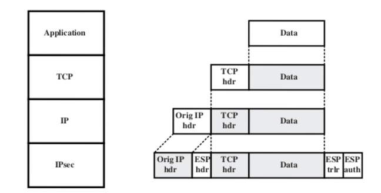

Stack of secure protocols
Lecture Info
Appunti presi in classe, seconda lezione in presenza sui protocolli sicuri.
Table of Contents
1 Introduzione
Si parte sempre dal presupposto che i vari protocolli sicuri proteggono soltanto determinati layer dello stack. Ad esempio, il protocollo MACSec protegge lo stack a livello 2, contro attacchi provenienti dalla stessa LAN (spoofing, access control, ec…).
2 IPSec
IPSec aggiunge feature di sicurezza al livello IP. Esistono due tipi di implementazione:
2.1 Transport mode
Comunicazione sicura tra due host.  In questo caso, l'header IP non viene cifrato. Vengono aggiunti dei campi ESP che specificano gli encryption schemes usati in IPSec.
2.2 Tunnel mode
Comunicazione sicura tra due gateway. In questo caso viene criptato e autenticato l'intero pacchetto IP, e viene aggiunto un nuovo header IP.
3 TLS/DTLS
TLS è un protocollo sicuro per dei canali di comunicazione stream-oriented, infatti si basa su TCP. A volte viene anche chiamato SSL (nome usato nelle vecchie versioni). DTLS invece è un protocollo datagram-oriented, come UDP. Entrambi questi protocolli si basano su un procedimento noto come 4-way-handshake.
- Il client specifica la versione del protocollo usata, il Session ID, e l2 "Cipher Suites";
- Il server si autentica mandando la catena dei certificati;
- Il client invia i suoi certificati nel caso in cui si voglia autenticare. In questo caso si parla di Mutual Autentication (quando ad esempio il client è un API);
- Fase di chiusura dell'handshake.
Esiste un tipo di attacco a TLS chiamato Downgrade Attack in cui l'attaccante agisce sulla negoziazione del protocollo, cercando di "forzare" l'uso di una versione deprecata o non sicura. Per questo motivo attualmente si sconsiglia di implementare il supporto a versioni precedenti di TLS, per evitare problemi di questo tipo.
Esiste un'estensione di TLS che viene usata abbastanza comunemente, chiamata SNI (Server-Name-Indication). Serve nello specifico per abilitare il supporto al virtual-hosting (macchina che hosta diversi server virtuali, quindi con nomi diversi, usando lo stesso indirizzo IP). Infatti normalmente il server-name verrebbe criptato (dato che fa parte del payload)! Serve quindi un modo per capire a quale virtual server specifico è indirizzata la richiesta per ottenere i certificati (virtual server diversi potrebbero usare catene di certificati diverse). Semplicemente, le informazioni per il virtual hosting vengono trasferite come plain-text durante il TLS handshake.